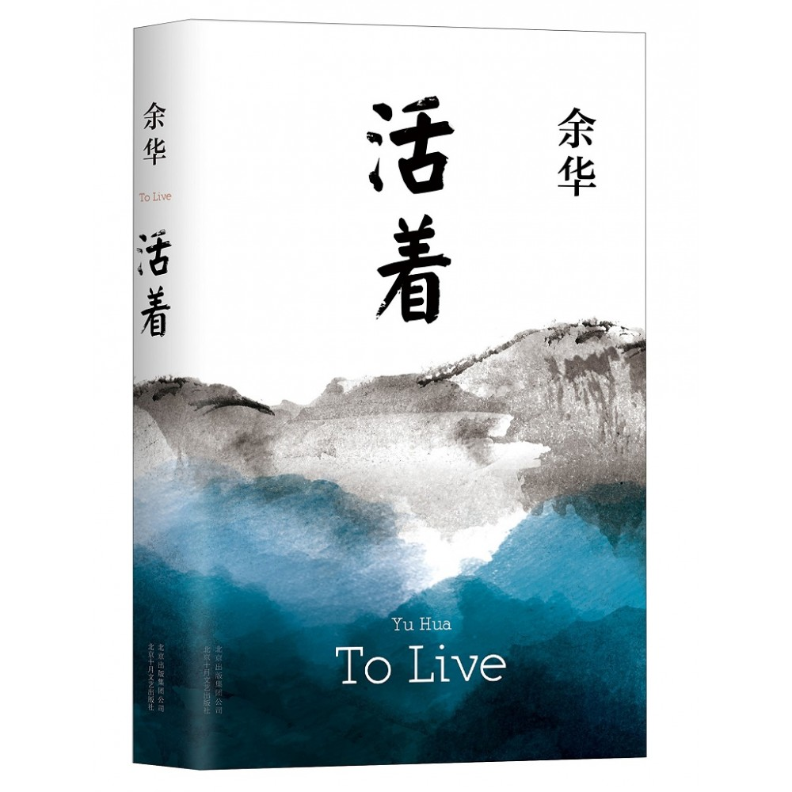

读书记录6：活着

《活着》是中国当代作家余华创作的长篇小说，首次发表于《收获》1992年第6期。
1 前言
2024-09-11 看完的书今天才有机会把读后感写下，当时看这本的感受就是一个：惨。感觉自己每天的生活和福贵相比真的幸福极了。所以还有什么理由不享受当下的生活呢？还有什么理由不开心呢？
2 经典语录
- 做人还是平常点好，争这个争那个，争来争去赔了自己的命。
- 人要是累得整天没力气，就不会去乱想了。
- 世界上没有一条道路是重复的，也没有一个人生是能够替代的。
- 人是为活着本身而活着的，而不是为了活着之外的任何事物所活着。
- 生活是属于每个人自己的感受，不属于任何别人的看法。
- 只要一家人天天在一起，也就不在乎什么福分了。
- 只要我始终保持事事留心的好学态度，即使衰老也算不得什么痛苦。
- 最恐怖的莫过于那个懂你的人在某一刻突然离开了你，整个生命就像不能承受般坍塌，你遥遥无期的盼望，却换来和陌生人一般的回答，伤心之处莫过于此。
- 父母越是关注你，对你的期望就越高，他们的关心像雪一样不断落到你的身上，最终把你压垮。
- 长日尽处，我站在你的面前，你将看到我的疤痕，知道我曾经受伤，也曾经痊愈。
3 允许无常
诗人曾丰有诗云：“不如意处人人有，未放心时事事非。”人生海海，生命的底色便是无常，充满着各种不幸。
对于命运的叵测，有的人一味沉浸在痛苦里，纠结难过，最后丧失生活的勇气。而内心强大的人，总能够坦然面对人生起落，允许所有事与愿违。
《活着》里，福贵一出生就是地主家的少爷。他们家有着一百多亩地，是远近闻名的大户人家。福贵住着豪门大院，身穿绫罗绸缎，衣食住行都有佣人和长工打理，是典型的“富二代”。
可他偏偏不学好，学会了逛窑子和赌钱。结果没多久，在一次赌博中，他中了赌场龙二的计谋，输光了家产。
一夜之间，福贵家一贫如洗。他们辞退了所有佣人，搬进茅草屋，换了粗布衣，生活从天堂跌进地狱。福贵的爹最终不堪重负，一命呜呼；紧接着，老丈人也接走了怀着孕的妻子家珍……
面对着接踵而至的打击，福贵没有痛哭流涕，也没有自怨自艾。
他振作起来，从龙二手里租了五亩地，每天起早贪黑地干活，靠自己的双手养活家庭。可让人没想到的是，多年后，龙二因为被定为地主恶霸，突然被拉走枪毙了。死之前，他还对福贵喊：“福贵啊，我可是替你死的。”
福贵输掉了家产，却赢得生命；龙二赢得大笔财产，却丢了命。
所以古人说：**“祸福无门至，风云不测来。”**人生的祸福没有定数，好事和坏事往往是交替发生的。上一刻可能你还是顺风顺水、万里阳光，下一刻就可能狼狈不堪、愁云惨淡。
**不妨放平心态，允许无常，得之坦然，失之淡然。**当你能够平和面对生活的种种境遇，命运自会有它的馈赠与安排。
4 允许离别
作家蒋勋说过：**人与人之间的关系，除了生离，就是死别。**这个世界上，再亲密的人，也只能陪你走一程。
龙二死后，福贵的生活没有任何变化。虽然过得贫穷，但有着一双儿女，还有着贤惠的家珍，日子也算是幸福了。
可是，命运总是不讲道理，非要把所有苦难都砸向福贵。先是儿子有庆，因为给县长的难产妻子献血，竟然被抽血抽到死去。接着是女儿凤霞，她好不容易嫁给了一个合适的人，不料却因为难产大出血而亡。妻子家珍本就有得软骨症，缠绵病榻多年。
因为儿女的离去，伤心过度，很快也跟着离开人世。而他的偏头女婿二喜，一直都善良能干，却在干活时被楼板砸到，意外去世。面对家人的接连离开，尽管难过，但福贵没有沉湎于悲痛当中。
他平静地一一埋葬了他们，与外孙苦根相依为命。因为家贫，苦根经常吃不饱饭。有次苦根发烧生病，福贵心疼，就摘了新鲜豆子煮给他吃，结果苦根被撑死。
就这样，唯一的亲人苦根也离开了福贵。换作常人，当身边的人不断离去，难免会想不开，甚至因为思念而终日痛苦。而福贵却接纳了亲人的离开，他知道，生离死别，都是拦不住的。
此后，他买下了一头老牛，当作家人彼此陪伴，继续过着自己的日子。
作家马德说，他人的离开与走散，是我们无法控制的事，也是人生常态。人活着的必修课之一，就是要学会接受离别。
身边的亲人、朋友，都不可能一直陪着我们，早晚都要面临分别的那一天。世间聚散不由你我，生死更是难料。相聚时，请好好对待，不辜负对方；离别后，就过好当下生活，别辜负自己。
一个人最大的成熟，就是允许与接受任何人的离开。
5 允许孤独
在《活着》的最后，福贵失去了所有亲人，和所有依靠。在村里，年老的他，总是喜欢一个人独来独往，陪伴他的只有那头老黄牛。
他独自耕作，独自生活，每日迎着阳光和晚霞歌唱。尽管孑然一身，但他却也无牵无挂，无忧无虑，活着简单又真实。
周国平在《做自己的朋友》中写道：“一个人是否是自己的朋友，就看他能否独处，独处是否感到充实。”
孤独是人生的常态，我们都曾有过茕茕孑立，默默独行的时刻。一味害怕孤独，你只能被内心的寂寞吞噬。当你懂得接纳孤独，反而能从独处中实现生命的圆融。
2013年，51岁的作家刘亮程离开了喧闹的城市。他只身来到新疆天山东麓的一个原始的村庄，在此安家落户。在这僻静之地，他一待就是十年。
虽然他也时常身处孤独之中，但他却欣然接受，从不会有无人相伴的寂寞之感。天气好的时候，他白天耕作，夜里读书、写作。遇到下雨天，不能到田里，他便窝在书房里，听着雨声，思考人生诸多问题。
无人问津的独居时光，让他得以不断沉淀，精神愈发自足而丰盈。
他曾在书中谈过对孤独的理解：
孤独是一种完整的自我，孤独是可以让人享受的。当你孤独时，你知道你的生命完整地回到了自身，你的对面是你刚才还在其中、现在已经脱身而出的那个喧嚣人世。
这正应了一句话：独处亦有清欢事，未必人生尽相知。
人生越往前走，越会明白，繁华都只是表象，热闹之外才是生活。孤独是一片诗意的土壤，能够诱发出关于心灵的思考和体验，让人不断走向自我。
生命的丰盛，从享受孤独开始。学会允许孤独，你才能在自己的小世界里，安顿好自己，过好当下的生活。
6 个人感受
生活无常，我们不能控制生活的走向，但是我们可以改变自己的所作所为。人生在世，放平心态。什么荣华富贵，在快乐幸福面前一文不值。但是快乐幸福也是要有物质基础的，钱不是目的，最重要的是用钱去做什么。
什么是生活，生活其实很简单，一日三餐，一年四季。生活其实也很复杂，你永远不知道幸运和不幸下一刻哪个会到来。所以，要接纳生活中一切事情的发生，这样可以以不变应万变。
福贵，已经成为了我生命中的一部分。我所经历的痛苦远不及福贵的万分之一。倘若让我经受福贵的痛苦，或许我可能都不想活了吧。感谢余华创作出了这么一个人物，一个我素未谋面的朋友。
珍惜当下，把握当下，享受当下，过好当下，该吃吃该喝喝。珍惜爱你的人和你爱的人，远离你讨厌的人，还有啥过不去的，过自己想要的生活，耶耶耶。
 微信
微信 支付宝
支付宝